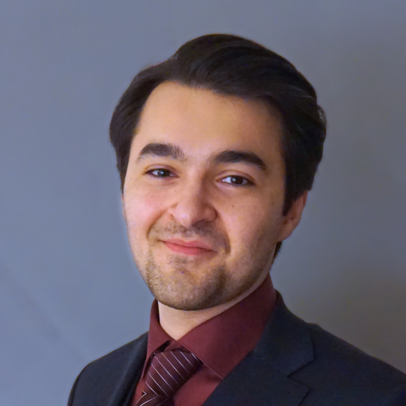

MD candidate · Researcher · Aspiring surgeon
— Aristotle
I'm a medical student at Umeå University with a keen interest in surgery and translational oncology research. I enjoy exploring the intersection of clinical practice, research, and data analysis.

About
I study medicine at Umeå University in northern Sweden. My clinical
interest centres on neurosurgery — a field I'm drawn to for its
intellectual complexity, the precision it demands, and the profound
connection between brain anatomy and human personality.
I'm currently working on translational oncology research focused on pancreatic cancer. The work involves survival analysis, biomarker characterisation, and computational approaches — aimed at a peer-reviewed publication.
I serve as an instructor of basic surgical skills for medical students in Umeå. I'm equally drawn to the computational side of medicine, using Python to analyze clinical and biomedical data. Outside of medicine, I train in martial arts, which has shaped my approach to discipline, precision and performance under pressure.
Based in Umeå, Sweden. Training at Norrlands universitetssjukhus (NUS) and affiliated with Umeå University's medical programme.
Projects
Using blood plasma analysis to search for molecular signatures that can distinguish pancreatic cancer from other diagnoses — with the goal of enabling earlier detection.
Analysing blood samples collected years before a cancer diagnosis to identify early warning signals for pancreatic cancer, using a large population-based biobank.
Investigating whether the expression of specific proteins in pancreatic tumour tissue can predict survival in patients who received chemotherapy before surgery.
CV
Education
Medicine (Läkarprogrammet)
Umeå University — Currently in T11 (research semester)
Research experience
Research Assistant — Translational Oncology
Umeå University · M. Sund laboratory, Dept. of Diagnostics and Intervention
Undergraduate Research Fellow — Forskaraspiranterna
Umeå University · P. Wanrooij lab (2023–2024) · M. Sund lab (2025)
Clinical experience
Physician Assistant — Cardiology Ward
Department of Internal Medicine, Örnsköldsvik
Nursing Assistant — Pulmonary & Renal Medicine
Region Västerbotten · SPEVA specialist ward
Geriatric Nursing Assistant
Umeå Kommun · Solbacken — Dementia care
Skills
Contact
Feel free to reach out about research collaborations, medicine, or anything else.